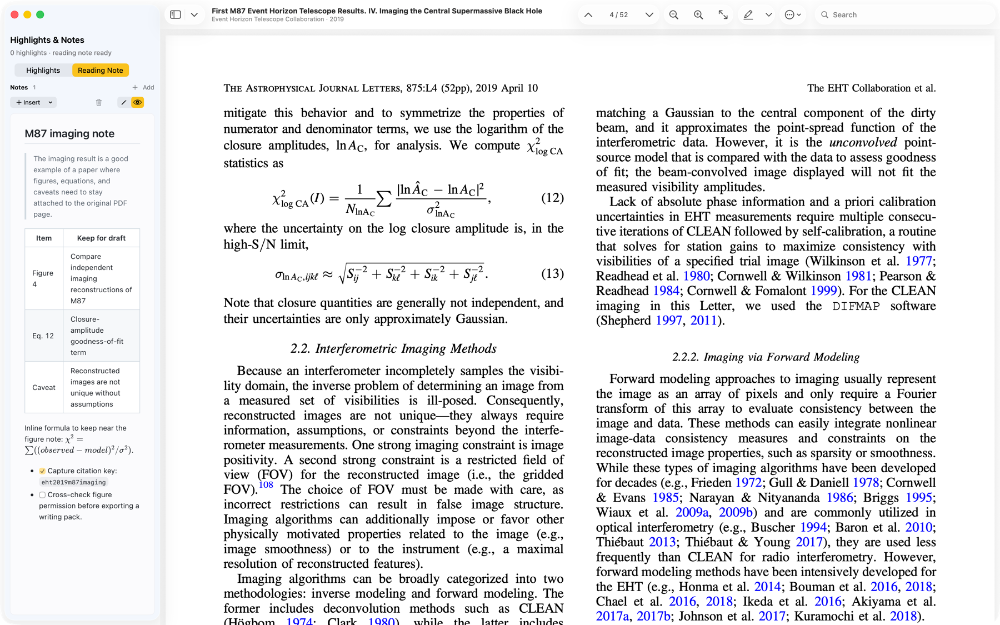
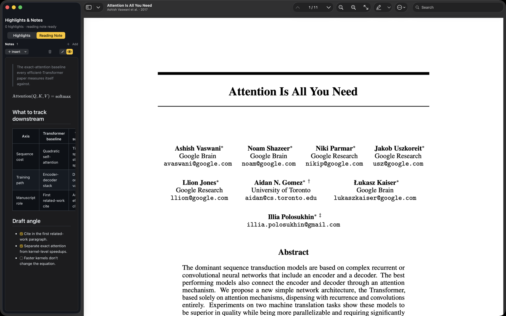
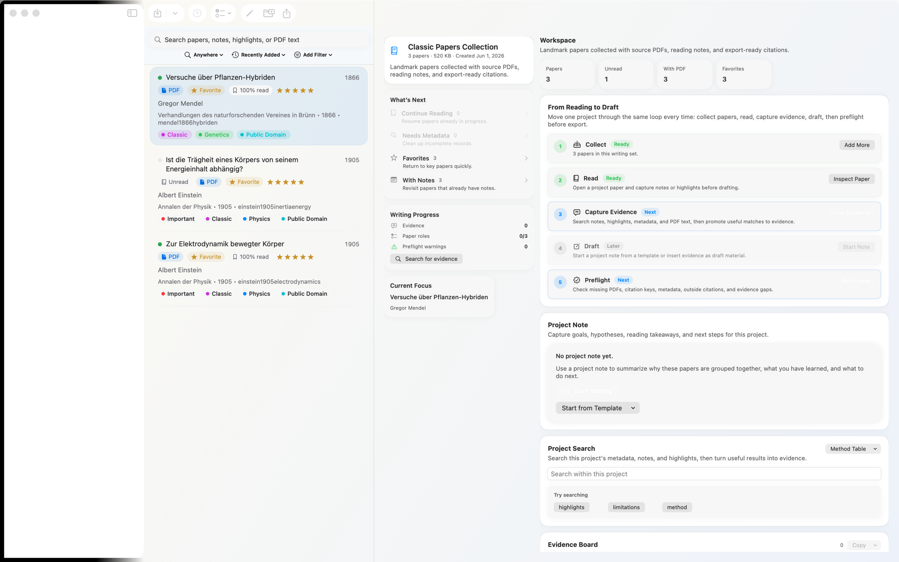
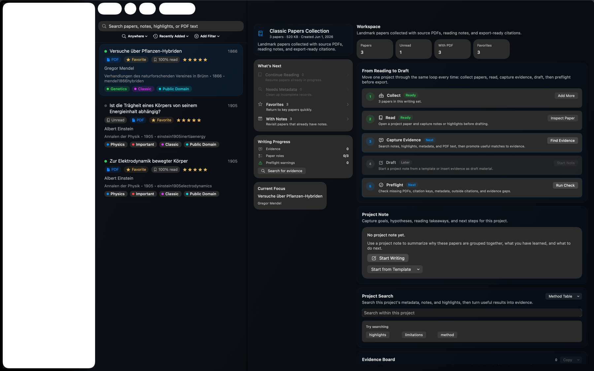
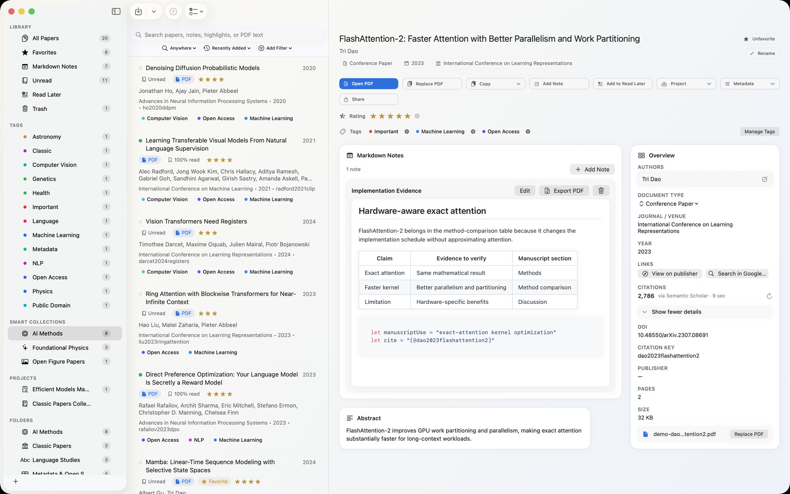
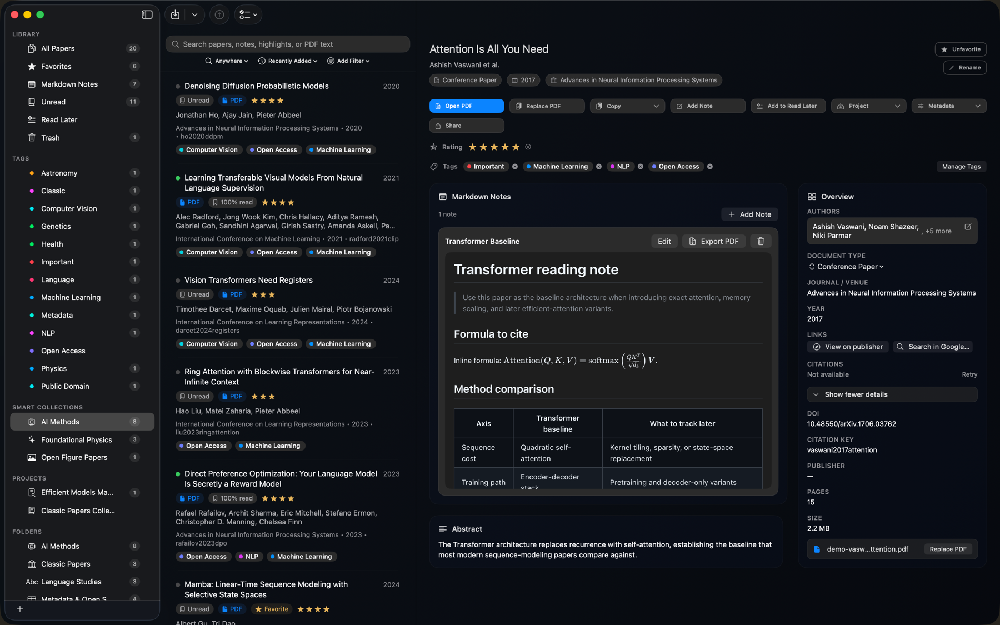
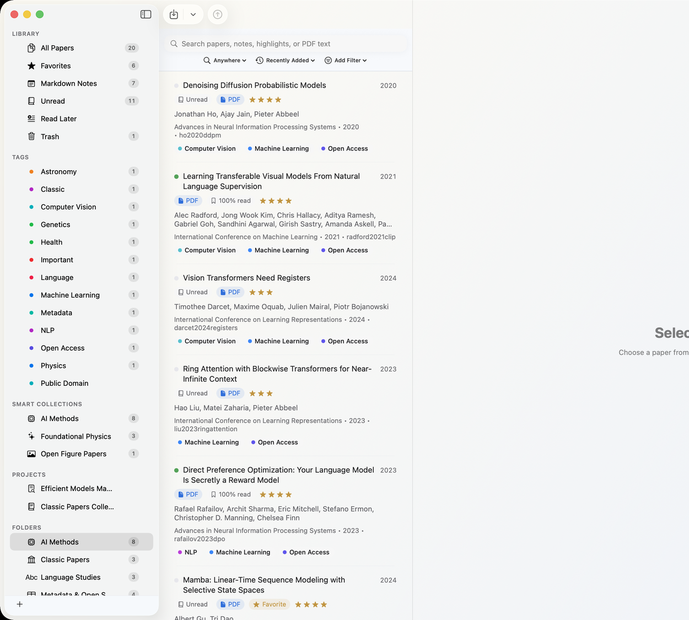
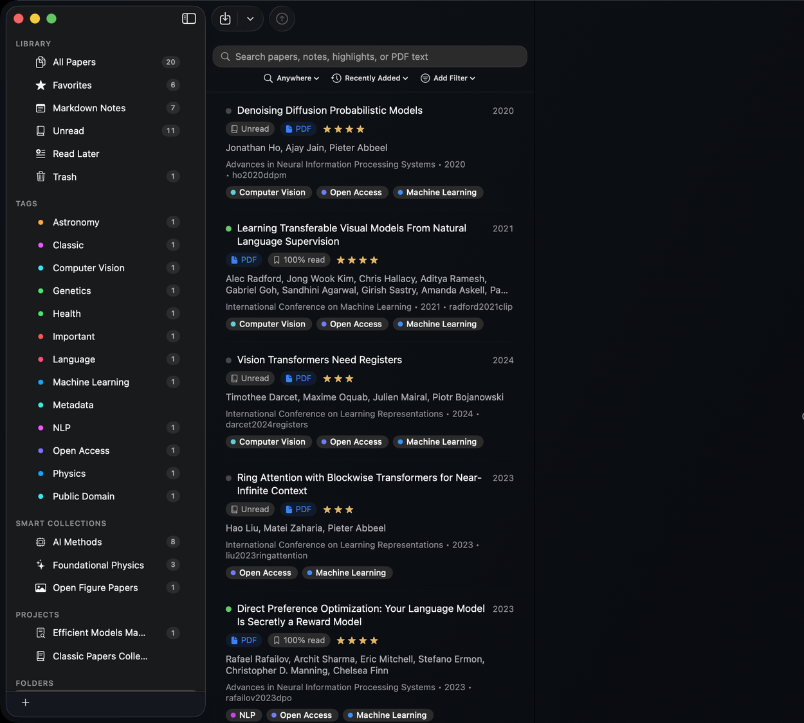
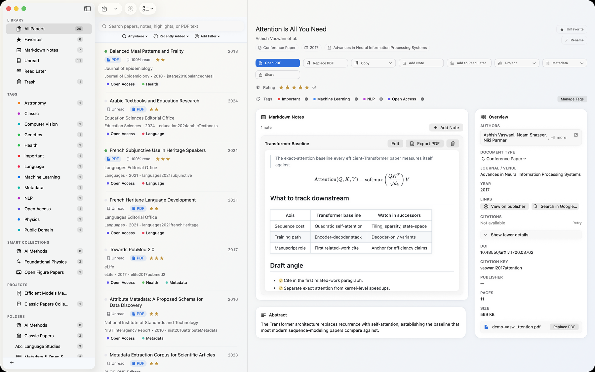
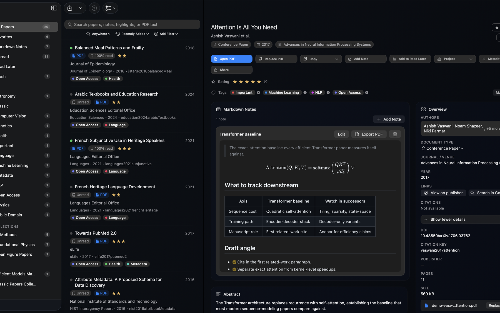

Claim · p.2●●●●●
Exact self-attention is the baseline that later efficient models position against.
“We propose a new simple network architecture, the Transformer, based solely on attention mechanisms.”
[@vaswani2017attention]A native research desk for macOS and iPadOS. Read and annotate papers, capture claims with a confidence and a page, then export the citations your manuscript expects — all on your own device.
Exact self-attention is the baseline that later efficient models position against.
“We propose a new simple network architecture, the Transformer, based solely on attention mechanisms.”
[@vaswani2017attention]Some efficiency gains are implementation-level, not modeling approximations.
“FlashAttention-2 parallelizes over the sequence length dimension to increase occupancy.”
[@dao2023flashattention2]State-space models are a separate family of long-sequence alternatives.
“Selective state spaces let the model condition dynamics on the input.”
[@gu2024mamba]Drop a PDF, paste a DOI, drag a folder. Read in a native window and mark it up — highlight, underline, ink, and notes. ⌘O ⌘F
Send a quote into the Evidence Board with its paper, page, and section role — Claim, Method, Limitation, and more.
Rate how strongly the source supports the claim and add your own interpretation before you draft.
Thread each claim to its citation key and export BibTeX, RIS, CSL JSON, Markdown, or a full bundle.
Most reference tools want to become your workflow and hold your library hostage in a web account. Papyrus Papers is a desk, not a destination.
Your library, PDFs, notes, and indexes live on your Mac and iPad. No Papyrus account. The network is touched only when you choose metadata lookup or WebDAV sync.
Every claim keeps its quote, page, citation key, and a confidence you set. Per-field provenance shows where metadata came from when sources disagree.
In: PDF, DOI, arXiv, BibTeX, RIS, folders. Out: BibTeX, RIS, CSL JSON, Markdown, and project bundles. Files stay portable; the workflow stays yours.
A native PDFKit reader paired with Markdown notes that understand LaTeX — reading and writing in one window, not two apps.


The Evidence Board turns scattered highlights into a structured case — every claim carries its source, page, citation key, and your confidence.


Everything you read and organized flows into the formats your writing tools expect — one command, no reformatting.
@inproceedings{vaswani2017attention, title = {Attention Is All You Need}, author = {Vaswani, Ashish and others}, booktitle = {Advances in NeurIPS}, year = {2017} } @article{dao2023flashattention2, title = {FlashAttention-2}, author = {Dao, Tri}, year = {2023} }
Saved queries that update themselves, working sets that span the library, and a hierarchy for things with a stable home. Use one. Use all three.




The same library and the same evidence board on macOS and iPadOS. Mark up a PDF with Apple Pencil on iPad; pin the claim and write from it on the Mac.


The same board — captured on iPad, assembled on Mac.
Literature reviews, related work, thesis chapters, proposals, and paper writing.
Datasheets, manuals, reference designs, standards, and design reviews.
Papers, technical reports, and lab material with notes side by side.
Anyone who reads a lot but won't tie their workflow to a web product.
Free to download with a 30-day full-access trial, then a one-time lifetime unlock — $3.99 on Mac, $5.99 on iPad.